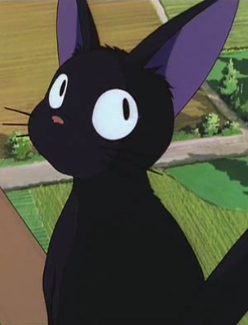

Nature's Finest
Favorite Animal
CATS
A tribute to the creatures that embody strength, grace, and curiosity. Hover over each card to see them in detail.

The Cat
Independent • Graceful • Agile
Much like the digital cat on my homepage, real cats represent a perfect balance of curiosity and independence.

Meme Cat
Funny • Meme-worthy • Internet Icon
The meme cat is a cultural icon that brings joy and humor to the internet.

The Street Cat
Adaptable • Resourceful • Independent
Street cats are resilient and adaptable, thriving in urban environments with minimal resources.